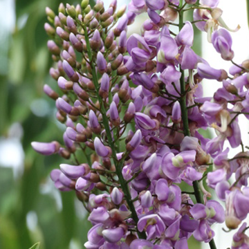

Endémicas de Yucatán

El balché (Lonchocarpus longistylus) es una planta
endémica de la región maya,
especialmente en la Península de Yucatán.
Es un arbusto o árbol pequeño con hojas
compuestas y flores violetas. Tradicionalmente,
los mayas utilizaban su corteza para preparar
una bebida fermentada del mismo nombre, mezclándola con miel.
Esta bebida tenía un uso ritual y
ceremonial, ya que se consideraba sagrada y se empleaba
en prácticas religiosas y curativas.
Además, al balché se le atribuyen propiedades medicinales,
como efectos relajantes y digestivos.
Su importancia no es solo botánica, sino también cultural,
pues está profundamente ligada a
las tradiciones espirituales del mundo maya.
El árbol chaká, conocido científicamente como Bursera simaruba, es una especie nativa de la Península de Yucatán y otras regiones tropicales de América.
Se distingue por su tronco de color rojizo que se pela en tiras delgadas.
En la medicina tradicional maya, se usa su resina para tratar heridas, quemaduras y dolores musculares.
Culturalmente, está ligado al árbol chechén, su "hermano" según una leyenda maya: el chechén es tóxico y el chaká crece cerca para curar su daño,
simbolizando el equilibrio entre el mal y la sanación. Además, el chaká es importante para la biodiversidad, ya que atrae a aves e insectos,
y ayuda a conservar los suelos en zonas secas.
El jabín (Piscidia piscipula) es un árbol nativo de Yucatán, conocido por su resistencia a la sequía y su uso ancestral en la cultura maya.
Alcanza entre 5 y 15 metros de altura, tiene flores pequeñas de color blanco rosado y hojas compuestas.
Su corteza y hojas contienen compuestos sedantes, por lo que se ha utilizado como tranquilizante natural y, tradicionalmente,
como veneno para pescar, ya que adormece a los peces. Además de su valor medicinal, el jabín es importante ecológicamente,
ya que proporciona sombra, ayuda a conservar el suelo y atrae a polinizadores como abejas y aves.

El pich (Enterolobium cyclocarpum), también conocido como oreja de elefante por la forma de sus vainas,
es un majestuoso árbol nativo de Yucatán y otras zonas tropicales de América.
Puede alcanzar más de 30 metros de altura y tiene una copa amplia que proporciona abundante sombra.
Sus hojas son pequeñas y numerosas, y sus frutos en forma de espiral son comidos por animales.
En la cultura maya, el pich se valora por su madera resistente y por su importancia ecológica,
ya que mejora la fertilidad del suelo y ofrece refugio a muchas especies. Además,
se usa en reforestación y como árbol ornamental en comunidades rurales.
El makuilis rosa (Tabebuia rosea) es un árbol originario de regiones tropicales como Yucatán,
muy apreciado por su espectacular floración en tonos rosados o lilas durante la época seca.
Puede alcanzar entre 15 y 30 metros de altura y tiene una copa amplia y frondosa.
Sus flores en forma de trompeta atraen a abejas, mariposas y aves, y sus frutos son vainas alargadas llenas de semillas aladas.
En Yucatán se planta comúnmente como árbol ornamental por su belleza y sombra, y su madera también se aprovecha en la carpintería.
Es símbolo de renovación y resistencia, ya que florece cuando la mayoría de los árboles pierden sus hojas.
Derechos reservados Alix Lopez©2025
|